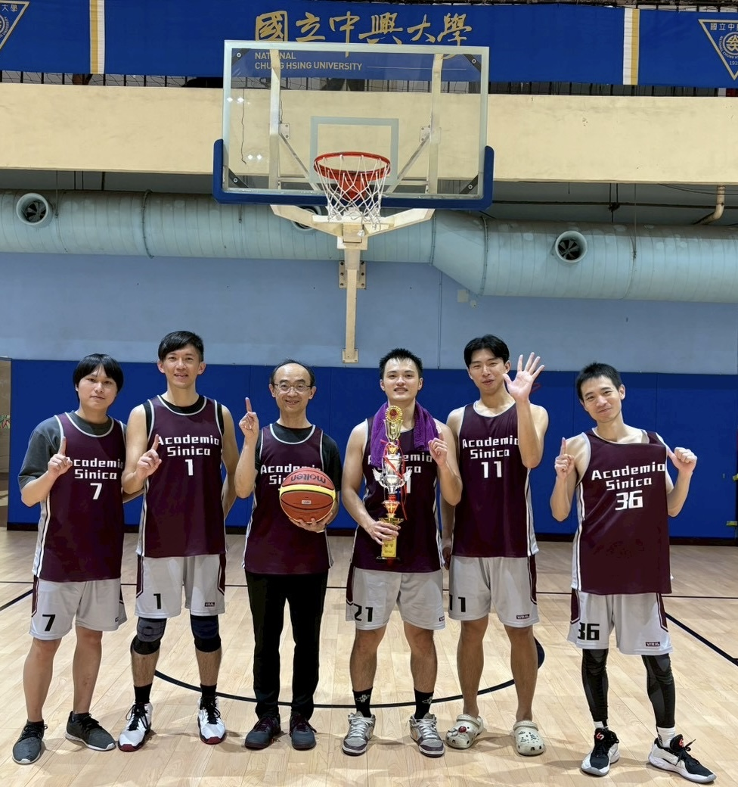

Extracurricular Activities
Basketball Tournaments
-
Champion Statistics Graduate Cup統研盃

-
Champion National Interdepartmental Cup (North District I)全國系際盃北一區

-
Champion Northern Basketball League (NBL)北區籃球聯盟

-
Champion National Finance and Banking Cup大財盃

-
Champion National Mathematics and Statistics Cup大數盃